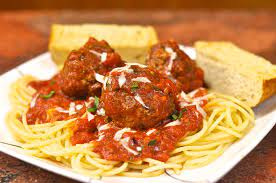

Meatballs

Simple and savoury meatballs that the whole family will love!
A meatball is ground meat rolled into a ball, sometimes along with other
ingredients, such as bread crumbs, minced onion, eggs, butter, and seasoning.
Meatballs are cooked by frying, baking, steaming, or braising in sauce.
There are many types of meatballs using different types of meats and spices.
245 calories; protein 21.6g; carbohydrates 5.9g; fat 15.3g;
cholesterol 117.5mg; sodium 406.9mg.
Ingredients
- 2 eggs
- 2 tablespoons Italian seasoning
- 2 teaspoons chopped fresh basil
- 1 teaspoon salt
- 1 teaspoon ground black pepper
- 1 teaspoon garlic powder
- 2 pounds ground beef
- 0.5 cup panko bread crumbs
Steps
- Preheat the oven to 375 degrees F (190 degrees C).
- Mix eggs, Italian seasoning, basil, salt, pepper, and garlic powder
together in a large bowl. Add beef and panko bread crumbs and mix
thoroughly.
- Shape mixture into about forty 1 1/2-inch balls, a little smaller than
golf balls, using a teaspoon. Place on ungreased, rimmed baking sheets.
- Bake in the preheated oven until no longer pink in the centers, turning
halfway through cooking time, 10 to 15 minutes total.